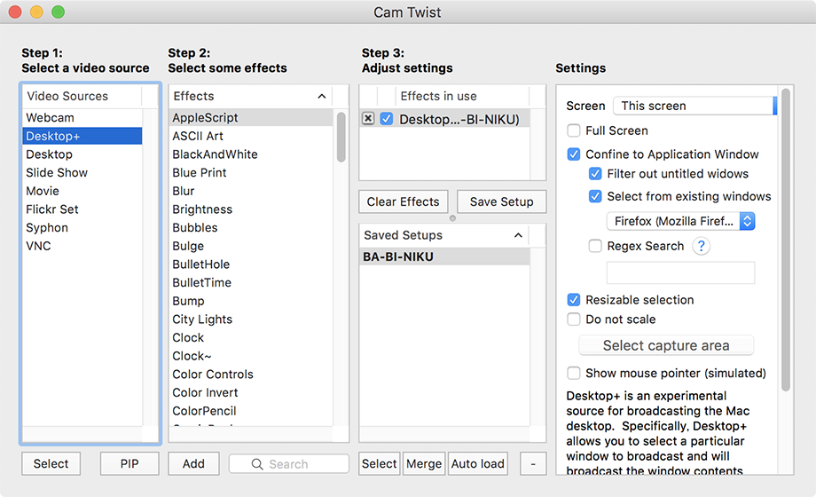
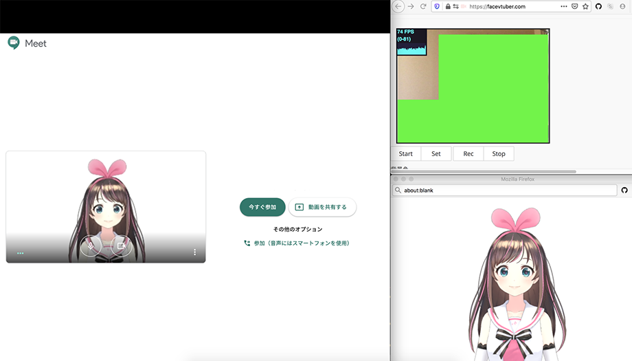

MacOS + CamTwist + FaceVTuber で簡単バ美肉してみた
VTuber の中でも、美少女モデルに変身することを「バ美肉 (バーチャル美少女セルフ受肉)」と言うらしい。
今回、それを簡単に実現する方法を試してみたので紹介する。
目次
- 仕組み
- CamTwist をインストールする
- 3D モデリングデータをダウンロードする
- FaceVTuber をセットアップする
- CamTwist を起動・設定する
- ビデオチャットツールを設定する
- 以上
仕組み
今回バ美肉を行う主要な仕組みには、FaceVTuber という Web アプリを使う。
ブラウザのみで簡単に動作するのでお手軽だ。コレにより、ウェブカメラで捉えた人物の動きに合わせて 3D モデルが動くところまで実現できる。
FaceVTuber の映像を「ウェブカメラの映像」としてビデオチャットツールに配信するため、CamTwist というツールを使う。このソフトは MacOS 用だが、Windows 環境でもこのソフトと同様の機能を持つソフトが用意できれば、バ美肉配信できるはずだ。
CamTwist をインストールする
まずは以下のページから CamTwist をダウンロードし、インストールする。
3D モデリングデータをダウンロードする
次に、バ美肉する 3D モデルをダウンロードする。今回は「キズナアイ」ちゃんのモデリングデータを使用する。
Zip ファイルをダウンロードしたら、解凍は不要。そのままにしておく。
FaceVTuber をセットアップする
Chrome や Firefox ブラウザで、以下の FaceVTuber のサイトにアクセスする。
アクセスしたら次の手順でセットアップしていく。
- ファイルアップロード欄より、用意したモデリングデータの Zip ファイルをアップロードする
- 何度かアラートダイアログで確認が入るので、「OK」を選んで進めていく
- モデリングデータが読み込まれたら「Start」ボタンを押下しウェブカメラを起動する
- 顔のトラッキングが始まるので、それを確認したら「Set」ボタンを謳歌する。コレにより顔の動きに合わせて 3D モデルが動作するようになる
- 「popWindow」ボタンを押下し、ポップアップウィンドウを開く。後で CamTwist を使い、このウィンドウをキャプチャさせることになる
- お好みで「モデルの位置調整」を行ったり、「手の操作」の有効・無効を切り替えて「ResetPose」ボタンを押下したりする。顔のトラッキング位置が微妙になったら「Set」ボタンを押せば再セットされる
CamTwist を起動・設定する
ポップアップウィンドウが用意できたら、コレをビデオチャットツールで配信できるようにするため、CamTwist を設定する。
Camtwist を起動したら、次のようにセットアップしていく。
- 「Step1」欄で「Desktop+」を選んで「Select」ボタンを押下する
- 「Step2」欄は「AppleScript」のまま、「Step3」欄もそのままにする
- 「Settings」欄で「Confine to Application Window」を選ぶ
- 「Select from existing windows」より、でポップアップ起動した FaceVTuber のウィンドウを選択する
- 「Save Setup」ボタンで保存する
- 「Auto load」ボタンでロードする

ビデオチャットツールを設定する
ココまで設定すると、ビデオチャットツールのデバイス設定で「CamTwist」と書かれた項目が選べるようになっているはずだ。「2YUV」と書かれたモノと2つ見つかるかと思うが、どちらを選んでも良い。
- FaceVTuber でウェブカメラをキャプチャしているウィンドウ
- FaceVTuber から開いたポップアップウィンドウ
- ビデオチャットツールのウィンドウ
の3つのウィンドウが重ならないよう、上手くウィンドウを並べておこう。
また、Chrome ブラウザで Hangouts Meet なんかに参加する場合は、FaceVTuber を Firefox など別のブラウザで開いておいた方が安定するだろう。
以上

コレで簡単にバ美肉できてよきよき。キズナアイちゃんになれて楽しい。ｗ